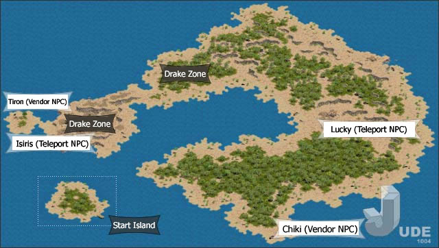
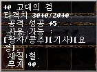

|
2002年8月22日
考你眼光！誰是PvP王四連環競猜大賽第三天報告
以下內容截至2002年8月22日中午12:00：（目前已經參加了的玩家名單）
各PvP參賽者人氣指數：
| 王族 |
人氣指數 |
妖精 |
人氣指數 |
騎士 |
人氣指數 |
法師 |
人氣指數 |
| 1. PT1 |
8% |
5. 諸星 |
11% |
9. 燄影 |
16% |
13. 靈羊 |
17% |
| 2. 藍燄 |
48% |
6. 登圖貝勒 |
17% |
10. Tataka |
6% |
14. TheGod |
11% |
| 3. 月之宿命 |
44% |
7. Kissmehk |
11% |
11. 疾風之邊 |
71% |
15. Drake |
66% |
| 4. 小小的王子 |
0.6% |
8. 三井壽14號 |
61% |
12. HKlwc99 |
7% |
16. 魔之使徒 |
6% |
遺忘之島的難度
來源：Lineage Playforum
英文翻譯：Lineage Compendium

- 島上的阿魯巴及獨眼巨人加起來的實力與巨蟻女皇差不多。
- 牠們移動速度已經是加速了的，假如阿魯巴還對自己加速的話，就如騎士用了勇水一樣快，牠們還會使用身上的濃白。
- 開始區域為其中一名傳送NPC 律基(Lucky)的左方（在島的右方），但他會間中失縱的，因此大家大約要等20分鐘他才會回家。他附近會有獨眼巨人重生，因為大家要小心。
- 另外，在島的左方有一名長註的傳送NPC，但你需要經過兩個飛龍區域才能到達。
- 假如你孤身上路，你不會生存很久。
- 較低等級的怪物會在島上右方出現，包括：夏洛伯、蛇女、狼人、蜥蝪人、楊果里恩、巨大鱷魚、鱷魚，但如果在戰鬥中阿魯巴突然出現的話，你將會方寸大亂。
- 在島上左方會有較高級的怪物，包活：阿魯巴、獨眼巨人、多羅、食人妖精王、哈維、飛龍，他們都可以看穿隱身的，而島上右方怪物則不會。
- 那裡有兩種牛人，分別是用錘和用斧的，用錘的可以看穿隱身，而用斧的則不會。
- 那裡的怪物在追著你時是不會有區域限制，因此除非你用否種方法離開牠們，否則牠們亦會跟著你的。
- 那裡的怪物是不會掉金幣的，你可以得到藥水，空白卷軸及封印道具。而經驗值亦不是太好，等級47的騎士在組隊下大約每小時可增加2.5%經騎值。
遺忘之島30/20單手武器
來源：Lineage Playforum
英文翻譯：Lineage Compendium

古代的劍：攻擊力30/20，單手，攻擊命中+5，王族、妖精及騎士可用，材質：鐵，重量：40
似乎此武器亦不能加武的，其平均傷害值為15.5/10.5，比+9武士刀的14.5/15.5差不多。
韓國正式伺服器8月21日更新內容
來源：韓國天堂官方網站公告
英文翻譯：Lineage Compendium
1. 加入了新的試鍊，而舊的試鍊則完全移除，試鍊的道具是不能轉移的，但它們可以賣給商店。
2. 說話之島的圖像及地圖重新包裝，而島上的怪物種類亦加強。
3. 加入了奇岩格鬥場的時制戰鬥系統。
4. 變身等級限制生效。
5. 隱藏之谷及歌唱之島的怪物等級減弱。
6. 修正了王族使用魔法頭盔的錯誤。
另外Lineage Playforum亦發現了以下改變：
- 由新妖精試鍊取得的敏捷頭盔防禦力由-2改為-1。
- 騎士及妖精試鍊獎品的安定值為6，而王族及法師的安定值則為4。
韓國測試伺服器8月21日更新內容
來源：韓國天堂官方網站公告
英文翻譯：Lineage Compendium
1. 加入了"壯麗幻想"(Grand Illusion)活動（即是幻想裝備活動）
2. 修正了王族使用魔法頭盔的錯誤。
3. 迷魅的怪物及狗隻（沒有提及召喚怪物）是不能帶往遺忘之島。
4. 修正了說話之島的地圖錯誤。
Lineage II官方網站更新

Lineage II官方網站加入了第四章：巨大水災時期(The Time of Great Blood)的介紹，除此以外亦有新的種族介紹和新的抓圖！
|